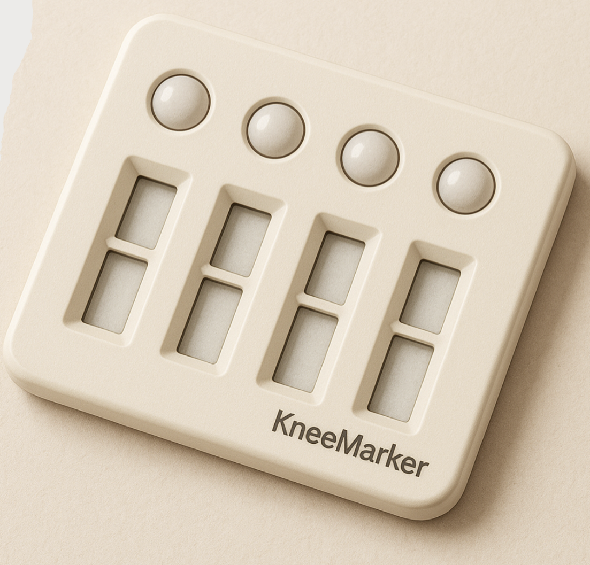
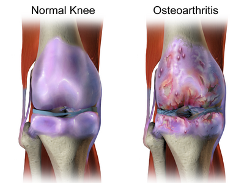

KneeMarker PTOA Monitoring System
Early Detection of Post-Traumatic Osteoarthritis After ACL Injury
About the KneeMarker Test
The KneeMarker is a lateral flow immunoassay (LFIA) designed for early detection of post-traumatic osteoarthritis (PTOA) in ACL-reconstructed patients. Our test detects three key biomarkers in urine:
CTX-II
C-telopeptide of type II collagen - indicates cartilage breakdown
COMP
Cartilage Oligomeric Matrix Protein - shows cartilage turnover
Neopterin
Differentiates OA from rheumatoid arthritis (RA)

The test uses gold nanoparticle-conjugated antibodies in a lateral flow immunoassay format. When urine is applied, biomarkers (CTX-II, COMP, and Neopterin) bind to specific antibodies, forming visible lines if present.
The test provides qualitative results (positive/negative) with 95% clinical accuracy compared to ELISA standards. No special storage or sample processing is required.
Early detection of PTOA enables:
- Timely physical therapy interventions
- Lifestyle modifications to slow progression
- Potential enrollment in clinical trials
- Better surgical outcomes when addressed early
Studies show 50% of ACL-reconstructed patients develop PTOA within 12-14 years. Our test detects biochemical changes years before radiographic evidence appears.
Test Line Interpretation
| Line | Appearance | Interpretation |
|---|---|---|
| CTX-II | Visible line | Cartilage degradation detected (PTOA likely) |
| COMP | Visible line | Cartilage turnover/remodeling detected |
| Neopterin | Visible line | Immune activation detected (consider RA) |
| Control | Must appear | Test validity indicator (if absent, test is invalid) |
Clinical Scenarios
| Scenario | Interpretation | Recommended Action |
|---|---|---|
| CTX-II +, COMP + | Active cartilage degradation (PTOA likely) | Orthopedic consult, consider imaging |
| CTX-II +, COMP - | Early cartilage breakdown | Monitor closely, lifestyle modifications |
| Neopterin + | Possible autoimmune component (consider RA) | Rheumatology referral, further testing |
| All negative | No significant cartilage degradation detected | Continue routine monitoring |
Upload Test Strip for Analysis
Drag & drop your test strip image here
or click to browse files
Biomarker Trend Analysis
Biomarker Trends Over Time
| Date | CTX-II | COMP | Neopterin | Status | Actions |
|---|
KneeMarker Instruction Manual
Test Purpose and Principle
The KneeMarker is a rapid urine test that detects early signs of post-traumatic osteoarthritis (PTOA) in patients recovering from ACL injuries by measuring:
- CTX-II (C-Telopeptide of type II collagen) - cartilage degradation
- COMP (Cartilage Oligomeric Matrix Protein) - cartilage turnover
- Neopterin - immune activation (to differentiate from RA)
These markers show biochemical changes before structural damage is visible on imaging.

Kit Contents
Test Procedure
- Collect first-morning urine in the provided cup
- Use dropper to apply 3 drops to sample well
- Wait 10 minutes for results to develop
- Scan test with KneeMarker Pro app or visually interpret lines

KneeMarker Test Demonstration
See the test in action with our detailed demonstration video
Clinical References
- Bernotiene E, et al. (2020). Emerging Technologies and Platforms for the Immunodetection of Multiple Biochemical Markers in Osteoarthritis Research and Therapy. Frontiers in Medicine.
- Garnero P, et al. (2002). Uncoupling of type II collagen synthesis and degradation predicts progression of joint damage in patients with knee osteoarthritis. Arthritis & Rheumatism.
- Lohmander LS, et al. (2003). The long-term consequence of anterior cruciate ligament and meniscus injuries: osteoarthritis. Am J Sports Med.
- Reibnegger G, et al. (1986). Urinary neopterin reflects clinical activity in patients with rheumatoid arthritis. Arthritis & Rheumatism.